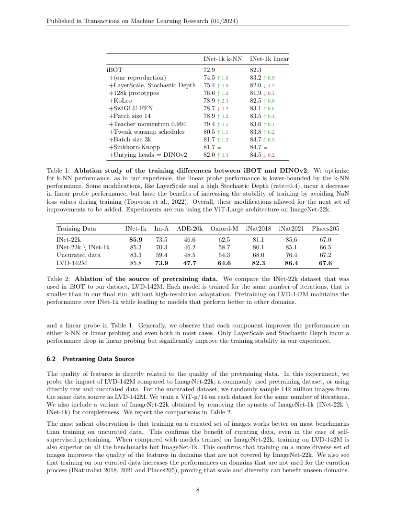
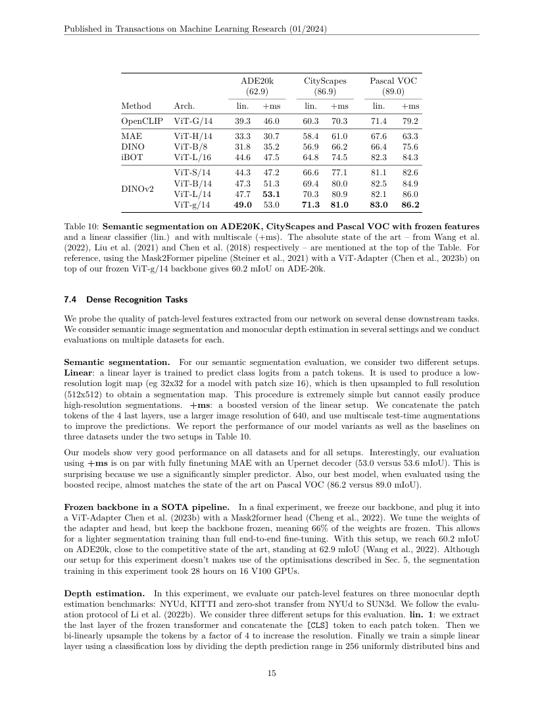

English translation pending — this page shows the Chinese original.
一句话结论
DINOv2 把数据策展、图像级与 patch 级自监督目标、训练稳定化和蒸馏组合为可扩展流程，使冻结的视觉编码器跨分类、检索、分割和深度任务提供可读出的特征。
论文定位与证据版本
论文类型是自监督视觉表征学习 / 视觉基础模型预训练，产物是可复用的 ViT 视觉 backbone 权重。正式发表属于 TMLR 2024 年 1 月；ICLR 2025 Journal Track 是期刊论文展示信息。本文数值定位于保存的带 TMLR 页眉作者存档稿，出版方 PDF 字节对齐待补。
问题定义
作者关注单个预训练编码器能否以冻结特征同时支持图像级与像素级任务。图像标签或文本描述对预训练的依赖会约束数据来源与所学信息；本文用图像自身生成训练目标，并用下游有标签读出检查表征质量。
方法概述
数据策展构成训练系统的一部分
从大规模未筛选图像池进行去重、测试集近重复排除、过滤以及相似图像检索，构建 LVD-142M。检索由自监督图像嵌入引导，并利用既有 curated datasets 作为种子。这里的“无监督”限定为预训练目标的标注信号；种子数据、过滤器和评测集合仍影响训练分布（§3，PDF pp.4–5）。
同时学习整图语义与局部描述
- DINO 图像目标：不同裁剪的 CLS token 经投影头形成原型分布，学生匹配 EMA 教师。
- iBOT patch 目标：学生看到被遮挡的 patch，预测教师在可见完整图像相应位置的特征分布。该目标直接强化密集特征。
- 独立投影头与 Sinkhorn-Knopp：全局与局部目标各自使用头，教师端做分布平衡，以适配大规模训练。
- KoLeo 正则：拉开 batch 内最近邻特征的距离，鼓励分布展开；对实例检索尤其有价值。
- 分辨率适配：训练末段提升到 518×518，以较小的高分辨率训练成本强化局部信息（§4）。
大模型训练与小模型交付分开核算
ViT-g/14 的大教师约有 1.1B 参数。实现采用高效注意力、不同长度裁剪的 sequence packing、实际跳过被丢弃样本的 stochastic depth，以及 FSDP 参数/优化器状态分片。小模型通过冻结大教师蒸馏，移除 masking 和 stochastic depth，并评估学生的 EMA 权重（§5）。这些工程改动解释可扩展性；论文相对 iBOT 实现的速度/显存数字带有硬件与实现基线条件。
核心实验与结果
| 证据与协议 | 对照 | DINOv2 / 处理后 | 判断 |
|---|---|---|---|
| 数据源消融，ViT-g/14 同迭代、较短训练；Table 2 / p.8，Im-A accuracy ↑ | uncurated 59.4 | LVD-142M 73.9 | 策展在该分布偏移基准更有价值 |
| 同表，ADE20k mIoU ↑ | uncurated 48.5 | LVD-142M 47.7 | 数据策展的收益有任务例外 |
| KoLeo 消融，Table 3a / p.9，Oxford-M mAP ↑ | 55.6 | 63.9 | 特征分布正则改善实例检索 |
| iBOT masking 消融，Table 3b / p.9，ADE20k mIoU ↑ | 44.2 | 47.1 | patch 目标对密集任务有直接证据 |
| 冻结骨干线性分割，Table 10 / p.15，ADE20k mIoU ↑ | OpenCLIP ViT-G/14 39.3 | DINOv2 ViT-g/14 49.0 | 密集特征在线性头下可读性更强 |
| 同表，增强线性设置 ADE20k mIoU ↑ | ViT-g/14 linear 49.0 | +ms 53.0 | 增强读出与输入分辨率会改变结果 |
| §7.4 独立下游实验，ADE20k mIoU ↑ | 冻结骨干、线性 +ms 53.0 | 冻结骨干 + ViT-Adapter/Mask2Former 60.2 | 任务头能力是完整系统的重要变量 |
+ms 同时拼接最后四层、提高图像分辨率并使用多尺度测试增强。应把组合配置完整记录，单独归因于测试多尺度会夸大其因果证据。ViT-L/14 在同表 ADE20k +ms 为 53.1，也说明模型参数量和每项任务的排序并非单调对应。
Table 8 的细粒度分类里，OpenCLIP 在 SUN、Cars 等列依然有优势。Table 9 的实例检索中，ViT-L 在部分列优于 ViT-g。Table 11 的深度评测区分单层、四层与 DPT 解码器，读出能力会显著改变误差；应分别看 backbone、head、输入和标注成本。
关键图示


局限、反证与成本
- 有标签读出：线性分类、语义分割和深度头使用下游训练数据；冻结 backbone 依然可能需要显著的 head 训练资源。
- 数据复现：完整策展流程和训练图像的获取条件决定从头复现难度。使用已发布权重验证迁移，是资源较小的独立问题。
- 域外泛化：多任务基准支持通用特征价值，但相机、材质、细小类别和遮挡条件改变时仍需新的测试。
- 空间与类别：patch 网格限制边界精度，语义相似向量还需要类别映射。PCA 颜色表示可视化坐标，颜色本身没有稳定类别名字。
- 版本：本轮确认期刊身份并完整读取作者存档稿；OpenReview 正式 PDF 的逐页差异审计列为待办。当前未运行 GPU、完整训练或基准复现。
对当前 wiki 判断的影响
Visual Representations and Backbones 可用 DINOv2 说明“预训练好的通用视觉感知骨干”。DINO 家族：自监督视觉表示与预训练骨干 将其与原始 DINO、自监督 DINOv3 以及 DETR 系列的同名检测方法分别定位。用在 3D Gaussian Splatting: Representation, Optimization, Geometry, and Dynamic Scenes 的方向应先验证密集特征到多视图/高斯的迁移，见 DINO 密集特征如何迁移到三维高斯语义分割？。
原始链接与本地证据
- 本地全文：
raw/ingest/2026-09-27-dinov2/author-paper.pdf；完整文本、逐页阅读范围与 SHA-256 见同目录read-manifest.json。 - 家族关系：DINO 家族：自监督视觉表示与预训练骨干；正式版本核验边界见本文开头。